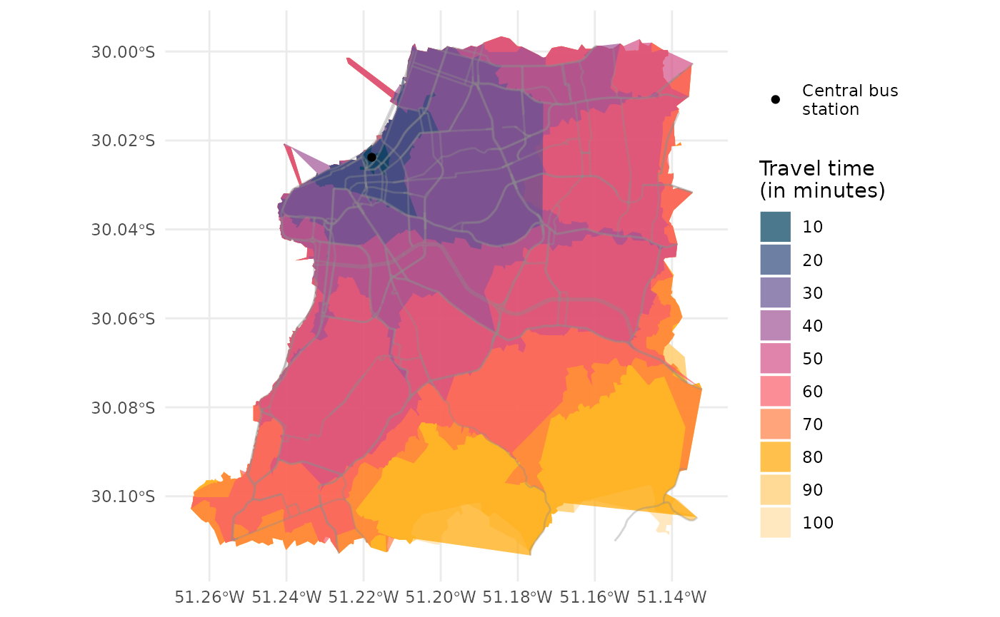
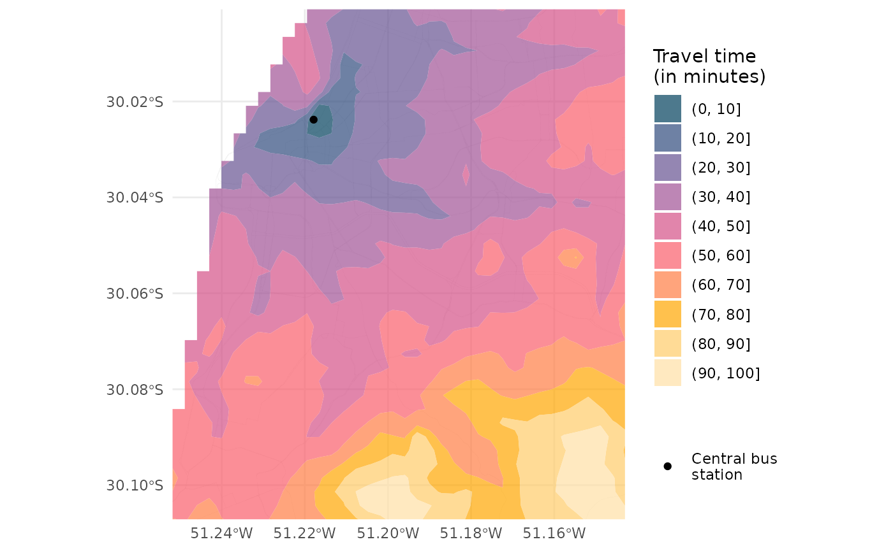

Abstract
This vignette shows how to calculate and visualize isochrones in R using ther5r package.
An isochrone map shows how far one can travel from a given place
within a certain amount of time. In other other words, it shows all the
areas reachable from that place within a maximum travel time. This
vignette shows how to calculate and visualize isochrones in R using the
r5r
package using a reproducible example. In this example, we will be
using a sample data set for the city of Porto Alegre (Brazil) included
in r5r. Our aim here is to calculate several isochrones
departing from the central bus station given different travel time
thresholds.
There are two ways to calculate / visualize isochrones using
r5r. The quick and easy option is using the
r5r::isochrone() function. The other alternative requires
one to first calculate travel time estimates, and then to do some
spatial interpolation operations. We will cover both approaches in this
vignette.
Before we start, we need to increase Java memory + load a few libraries, and to build routable transport network.
Warning: If you want to calculate how many
opportunities (e.g. jobs, or schools or hospitals) are located inside
each isochrone, we strongly recommend you NOT to use the
isochrone() function. You will find much more efficient
ways to do this in the Accessibility
vignette.
setup_r5()
First, we need to increase the memory available to Java and load the packages used in this vignette. Please note we allocate RAM memory to Java before loading our libraries.
options(java.parameters = "-Xmx2G")
library(r5r)
library(sf)
library(data.table)
library(ggplot2)
library(interp)To build a routable transport network with r5r, the user
needs to call setup_r5() with the path to the directory
where OpenStreetMap and GTFS data are stored.
# system.file returns the directory with example data inside the r5r package
# set data path to directory containing your own data if not running this example
data_path <- system.file("extdata/poa", package = "r5r")
r5r_core <- setup_r5(data_path)The quick and easy approach to estimate / visualize an isochrone is
to use the isochrone() function built in the
r5r package. In this example, we will be calculating the
isochrones by public transport from the central bus station in Porto
Alegre. The isochrone() function calculates isochrones
considering the travel times from the origin point to a random sample of
80% of all nodes in the transport network (default). The
size of the sample can be fine tuned with the sample_size
parameter.
With the code below, r5r determines the isochrones
considering the median travel time of multiple travel time estimates
calculated departing every minute over a 120-minute time window, between
2pm and 4pm.
# read all points in the city
points <- fread(file.path(data_path, "poa_hexgrid.csv"))
# subset point with the geolocation of the central bus station
central_bus_stn <- points[291,]
# isochrone intervals
time_intervals <- seq(0, 100, 10)
# routing inputs
mode <- c("WALK", "TRANSIT")
max_walk_time <- 30 # in minutes
max_trip_duration <- 100 # in minutes
time_window <- 120 # in minutes
departure_datetime <- as.POSIXct("13-05-2019 14:00:00",
format = "%d-%m-%Y %H:%M:%S")
# calculate travel time matrix
iso1 <- r5r::isochrone(r5r_core,
origins = central_bus_stn,
mode = mode,
cutoffs = time_intervals,
sample_size = 1,
departure_datetime = departure_datetime,
max_walk_time = max_walk_time,
max_trip_duration = max_trip_duration,
time_window = time_window,
progress = FALSE)As you can see, the isochrone() functions works very
similarly to the travel_time_matrix() function, but instead
of returning a table with travel time estimates, it returns a
POLYGON "sf" "data.frame" for each isochrone of each
origin.
head(iso1)
#> Simple feature collection with 6 features and 2 fields
#> Geometry type: POLYGON
#> Dimension: XY
#> Bounding box: xmin: -51.2648 ymin: -30.1133 xmax: -51.1322 ymax: -29.9966
#> Geodetic CRS: WGS 84
#> id isochrone polygons
#> 1 89a90128a8fffff 100 POLYGON ((-51.2572 -30.111,...
#> 2 89a90128a8fffff 90 POLYGON ((-51.2572 -30.111,...
#> 3 89a90128a8fffff 80 POLYGON ((-51.2572 -30.111,...
#> 4 89a90128a8fffff 70 POLYGON ((-51.2572 -30.111,...
#> 5 89a90128a8fffff 60 POLYGON ((-51.2558 -30.1105...
#> 6 89a90128a8fffff 50 POLYGON ((-51.2483 -30.0831...Now it becomes super simple to visualize our isochrones on a map:
# extract OSM network
street_net <- street_network_to_sf(r5r_core)
main_roads <- subset(street_net$edges, street_class %like% 'PRIMARY|SECONDARY')
colors <- c('#ffe0a5','#ffcb69','#ffa600','#ff7c43','#f95d6a',
'#d45087','#a05195','#665191','#2f4b7c','#003f5c')
ggplot() +
geom_sf(data = iso1, aes(fill=factor(isochrone)), color = NA, alpha = .7) +
geom_sf(data = main_roads, color = "gray55", size=0.01, alpha = 0.2) +
geom_point(data = central_bus_stn, aes(x=lon, y=lat, color='Central bus\nstation')) +
# scale_fill_viridis_d(direction = -1, option = 'B') +
scale_fill_manual(values = rev(colors) ) +
scale_color_manual(values=c('Central bus\nstation'='black')) +
labs(fill = "Travel time\n(in minutes)", color='') +
theme_minimal() +
theme(axis.title = element_blank())
This second approach to calculating isochrones with r5r
takes a few more steps because it requires the spatial interpolation of
travel time estimates, but it generates more refined maps. It takes two
steps.
First, we calculate the travel times by public transport from the
central bus station in Porto Alegre to multiple destinations we input to
the function. Here, we input the points data frame, which
comprises the centroids of a hexagonal grid at a fine spatial
resolution.
# calculate travel time matrix
ttm <- travel_time_matrix(r5r_core,
origins = central_bus_stn,
destinations = points,
mode = mode,
departure_datetime = departure_datetime,
max_walk_time = max_walk_time,
max_trip_duration = max_trip_duration,
time_window = time_window,
progress = FALSE)
head(ttm)
#> from_id to_id travel_time_p50
#> <char> <char> <int>
#> 1: 89a90128a8fffff 89a901291abffff 61
#> 2: 89a90128a8fffff 89a9012a3cfffff 84
#> 3: 89a90128a8fffff 89a901295b7ffff 63
#> 4: 89a90128a8fffff 89a901284a3ffff 66
#> 5: 89a90128a8fffff 89a9012809bffff 55
#> 6: 89a90128a8fffff 89a901285cfffff 45Now we need to bring the spatial coordinates information to our
travel time matrix output ttm, and do some spatial
interpolation of travel time estimates.
# add coordinates of destinations to travel time matrix
ttm[points, on=c('to_id' ='id'), `:=`(lon = i.lon, lat = i.lat)]
# interpolate estimates to get spatially smooth result
travel_times.interp <- with(na.omit(ttm), interp(lon, lat, travel_time_p50)) |>
with(cbind(travel_time=as.vector(z), # Column-major order
x=rep(x, times=length(y)),
y=rep(y, each=length(x)))) |>
as.data.frame() |> na.omit()With just a few more lines of code, we get our isochrones on a map:
# find isochrone's bounding box to crop the map below
bb_x <- c(min(travel_times.interp$x), max(travel_times.interp$x))
bb_y <- c(min(travel_times.interp$y), max(travel_times.interp$y))
# plot
ggplot(travel_times.interp) +
geom_sf(data = main_roads, color = "gray55", size=0.01, alpha = 0.7) +
geom_contour_filled(aes(x=x, y=y, z=travel_time), alpha=.7) +
geom_point(aes(x=lon, y=lat, color='Central bus\nstation'),
data=central_bus_stn) +
# scale_fill_viridis_d(direction = -1, option = 'B') +
scale_fill_manual(values = rev(colors) ) +
scale_color_manual(values=c('Central bus\nstation'='black')) +
scale_x_continuous(expand=c(0,0)) +
scale_y_continuous(expand=c(0,0)) +
coord_sf(xlim = bb_x, ylim = bb_y) +
labs(fill = "Travel time\n(in minutes)", color='') +
theme_minimal() +
theme(axis.title = element_blank())
r5r objects are still allocated to any amount of memory
previously set after they are done with their calculations. In order to
remove an existing r5r object and reallocate the memory it
had been using, we use the stop_r5 function followed by a
call to Java’s garbage collector, as follows:
If you have any suggestions or want to report an error, please visit the package GitHub page.